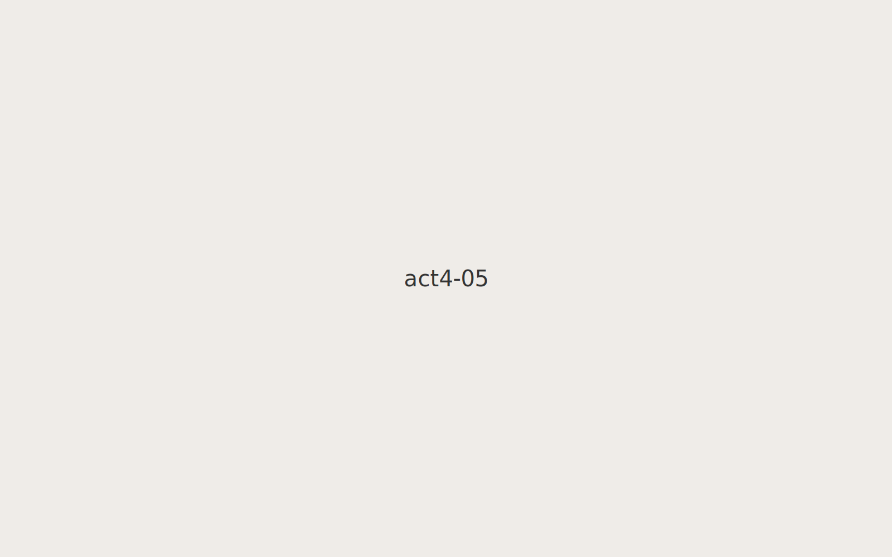
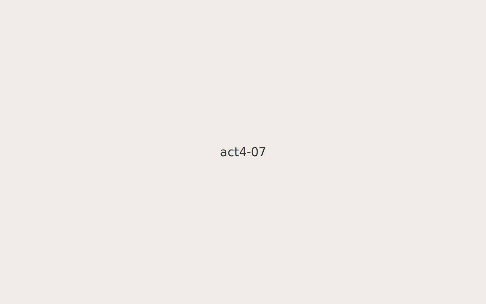

← Back to Hub
Act IV — Home Redefined
Family around the table.
Cooking together.
Neighborhood walks.
Birthday party, years later.

Open door to new lives.
Garden, homegrown.

New traditions.
Community event.
Sunlit porch.
Family album, closing frame.
1
2
3
4
5
6
7
8
9
10
↑ Top